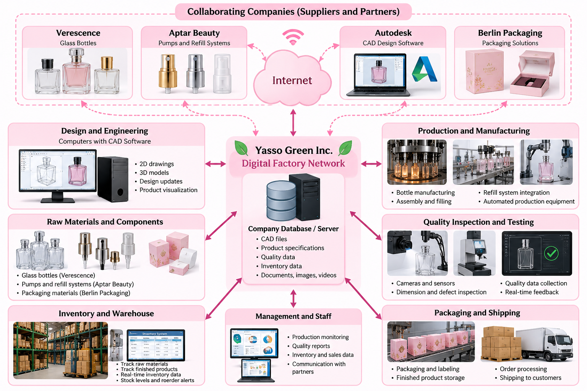
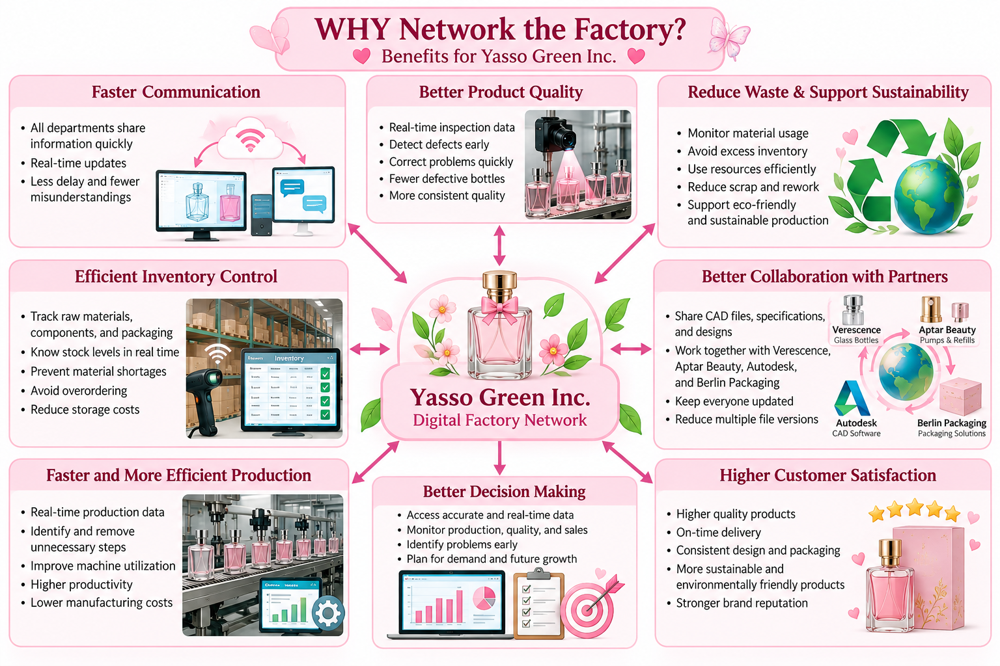
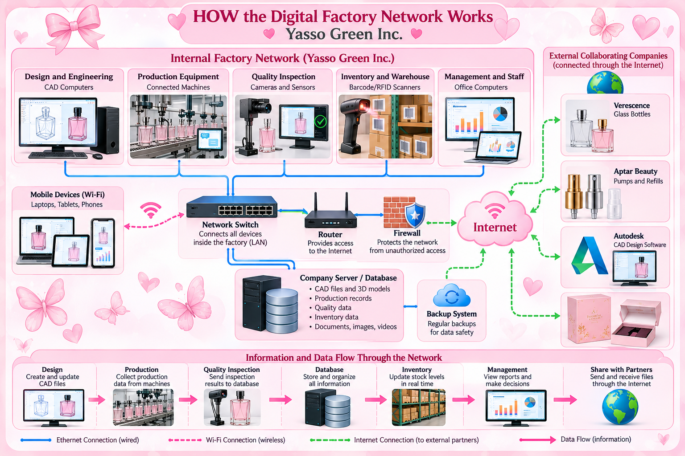

Assignment 2
My Company's Digital Factory Network Model
My Company
Yasso Green Inc.
Project Title
Sustainable Refillable Perfume Bottle Design
1. WHAT Devices, Machines, Resources, and Objects Will Be Networked?
For Yasso Green Inc., I plan to create a digital factory network for the production of my sustainable refillable perfume bottle. The network will connect the main devices, machines, people, and digital information that are needed during the design and manufacturing process. The goal is to have the important parts of the factory connected instead of working separately.
The network will include design computers used to create and view 2D drawings and 3D CAD models of the perfume bottle. These computers will be connected with the production area, where different machines and equipment are used to manufacture and assemble the bottle, refill system, sprayer, and packaging. Quality inspection equipment, such as cameras, measuring devices, and sensors, will also be part of the network. These devices can collect information about bottle dimensions, defects, and product quality.
The network will also include the inventory and warehouse system. This system will contain information about glass bottles, refill components, sprayers, packaging materials, and finished products. The company's computers and database will store important digital objects such as CAD drawings, images, product specifications, quality reports, inventory information, text documents, and videos.
Finally, the network will include communication with the collaborating companies: Verescence for glass bottle manufacturing, Aptar Beauty for pumps and refill systems, Autodesk for computer-aided design and visualization, and Berlin Packaging for packaging solutions. Together, these resources will form the digital factory network for Yasso Green Inc. This creates one connected system.

WHY Will These Devices, Machines, Resources, and Objects Be Networked?
For Yasso Green Inc., networking the factory devices, machines, computers, and digital information is very important because it allows the different parts of the company to communicate and share information. Instead of each department working separately, the digital factory network will allow information to move between design, production, quality inspection, inventory, packaging, and management.
One important benefit is better quality control. Cameras, sensors, and inspection equipment can collect information during production. If a perfume bottle has the wrong dimensions or another defect, the quality information can be shared with the production team quickly. This can help identify problems earlier and reduce the number of defective bottles that are produced.
Networking can also help reduce waste and improve sustainability. Yasso Green Inc. can monitor how many bottles, pumps, refill components, and packaging materials are available and how many are being used. Better inventory information can prevent unnecessary orders and reduce excess materials. Production information can also help the company identify unnecessary manufacturing steps and improve efficiency.
Another benefit is better collaboration. CAD drawings, 3D models, specifications, images, quality reports, and other digital objects can be shared between Yasso Green Inc. and its collaborating companies. Updated information can be available to the people who need it without creating many different versions of the same file.
Overall, networking supports faster communication, better decisions, improved product quality, reduced waste, and a more organized manufacturing process for the sustainable refillable perfume bottle and improves customer satisfaction.

HOW Will the Digital Factory Network Work?
Yasso Green Inc. will build its digital factory network using a Local Area Network (LAN) inside the factory and the Internet for communication outside the company. Fixed computers and production equipment will mainly connect through Ethernet cables because they provide a stable connection. Wi-Fi will be available for laptops, tablets, and other mobile devices used by employees.
A network switch will connect the computers, production equipment, quality inspection devices, and other networked systems inside the factory. The switch will connect to a router, which will provide access to the Internet. A central server and database will store important digital information, including CAD files, production records, quality results, inventory records, images, and technical documents. Authorized employees will be able to access this information from their workstations.
The Internet will provide secure communication between Yasso Green Inc. and its collaborating companies. Files and design information can be exchanged electronically when they are needed for manufacturing or packaging. This allows the company to work with outside partners without placing them directly inside the factory's internal network.
The network will also need protection. A firewall will help prevent unauthorized connections from entering the internal network. Employees will have individual usernames, passwords, and different access permissions depending on their jobs. Important company information will also be backed up regularly. With Ethernet, Wi-Fi, switches, routers, servers, Internet connections, and security controls working together, Yasso Green Inc. can create an organized and secure digital factory network for future growth and expansion.
